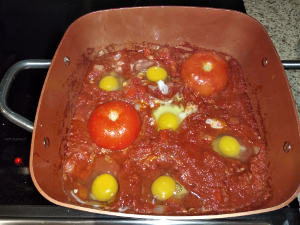
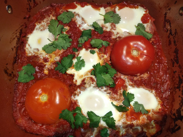

Israeli Shakshuka
 
Ingredients:
- 6 eggs, 2 cans (30qz) stewed or diced tomatoes, onion, 1 red bell peppper, 4 garlic cloves, 1tsp paprika, 1 tsp cumin, 3⁄4 tsp salt, 1⁄4 tsp pepper, silantro
How to make it:
- Preheat oven to 375
- Add olive oil to hot skillet. Add onions, pepper for 5 minutes
- Add cumin, paprika, salt, pepper, and garlic for 1 minutes
- Add tomatos until it’s simmer
- Reduce to low hit for 15 minutes
- Crack the eggs and don’t wisk them
- Put in oven until the eggs are solid
- Sprinkle silantro leavs